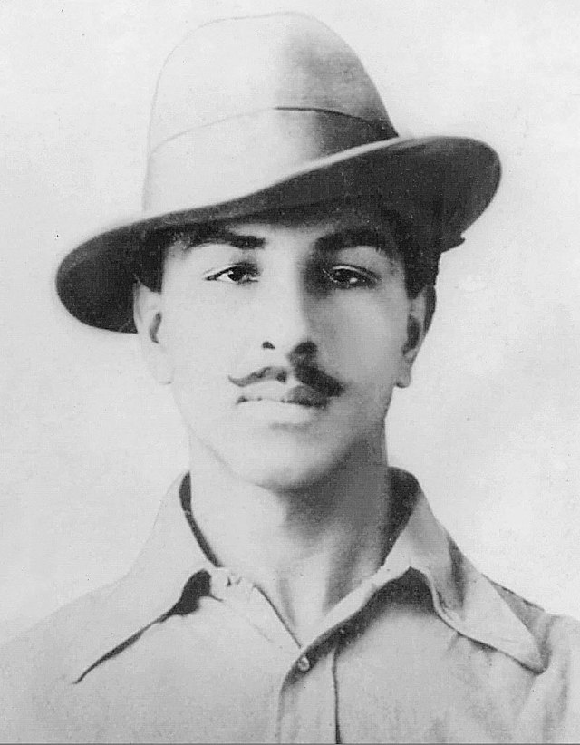

AJADI KA AMRIT MHOTSAV
Welcome to our website this webesite was topic on ajadi ka amarit mhotsav. Azadi Ka Amrit Mahotsav is an initiative of the Government of India to celebrate and commemorate 75 years of progressive Independent India. Through Azadi Ka Amrit Mahotsav India is celebrating the glorious history of it’s people, culture and achievements. It is an embodiment of all that is progressive about India’s socio-cultural, political and economic identity.
The official journey of “Azadi ka Amrit Mahotsav” was started on 12th March 2021 from Sabarmati Ashram when Prime Minister, Shri Narendra Modi flagged off a 75-week long festival to commemorate 75 years of India’s Independence. This started a 75-week countdown to our 75th anniversary of Independence Day and this will end post a year on 15 August 2023.
On 12th March 1930, Mahatma Gandhi started Dandi Yatra from Sabarmati Ashram for the awakening of self-reliance and self-respect of the country, and on this day in 2021, the symbolic Dandi Yatra was started by Prime Minister, Shri Narendra Modi which marks the revival of our journey of self-reliance and self-respect with the beginning of Azadi Ka Amrit Mahotsav.
Azadi Ka Amrit Mahotsav is dedicated to the people of India who have not only been instrumental in bringing India far evolutionary journey but also hold within them the power and potential to enable the vision of Prime Minister Modi’s to activate India 2.0 which is fueled by the spirit of Atmanirbhar Bharat.

Click on the name of any FREEDOM FIGHTER to read about it
Mhatma ghandhi
Bhagat Singh
Laxmibai
Jawaharlal Nehru